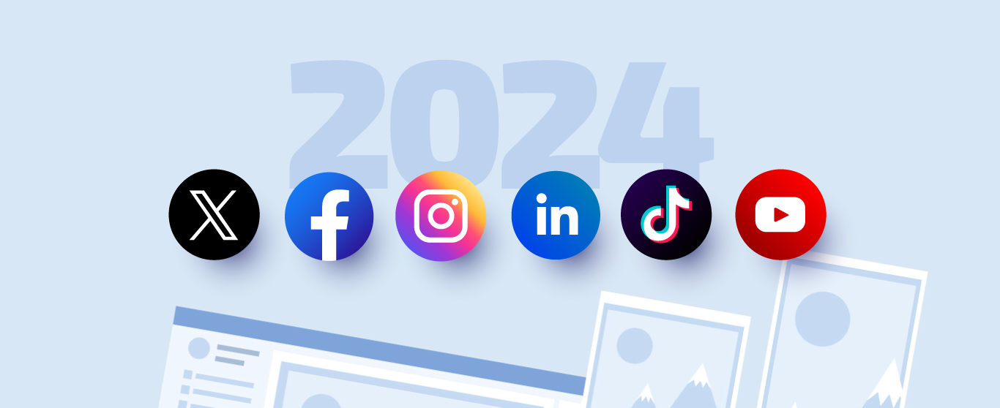

Redes Sociales: Conectando el Mundo
Introducción
Las redes sociales han revolucionado la forma en que nos comunicamos, compartimos y nos relacionamos. En esta página, exploraremos qué son, sus ventajas, desventajas y algunas de las plataformas más populares.
¿Qué son las Redes Sociales?
Las redes sociales son plataformas digitales que permiten a los usuarios crear contenido, compartir información y conectarse con otras personas. Estas plataformas abarcan una amplia variedad de formatos, desde publicaciones de texto hasta videos en vivo.
Principales Plataformas
-
Facebook:
- Fundada en 2004, es una de las redes sociales más grandes del mundo.
- Permite compartir fotos, videos, y crear grupos de interés.
-
Instagram
- Lanzada en 2010, se centra en el contenido visual.
- Popular entre artistas, influencers y empresas de moda.
-
Twitter
- Conocida por sus mensajes cortos, o "tweets".
- Ideal para noticias de última hora y debates.
-
TikTok
- Plataforma emergente que se centra en videos cortos y creativos.
- Muy popular entre la generación más joven.


Ventajas de las Redes Sociales
- Conexión Global: Posibilidad de interactuar con personas de todo el mundo.
- Promoción de Negocios: Herramienta efectiva para el marketing digital y la promoción de productos.
- Acceso a Información: Facilitan el acceso a noticias y tendencias en tiempo real.
Desventajas de las Redes Sociales
- Privacidad: Riesgos asociados con la exposición de información personal.
- Desinformación: Difusión de noticias falsas y rumores.
- Adicción: Uso excesivo que puede afectar la salud mental y las relaciones personales.
Conclusión
Las redes sociales son una herramienta poderosa que, si se utilizan de manera consciente y responsable, pueden enriquecer nuestras vidas. Es esencial ser críticos y cuidadosos en nuestro uso para maximizar sus beneficios y minimizar sus riesgos.